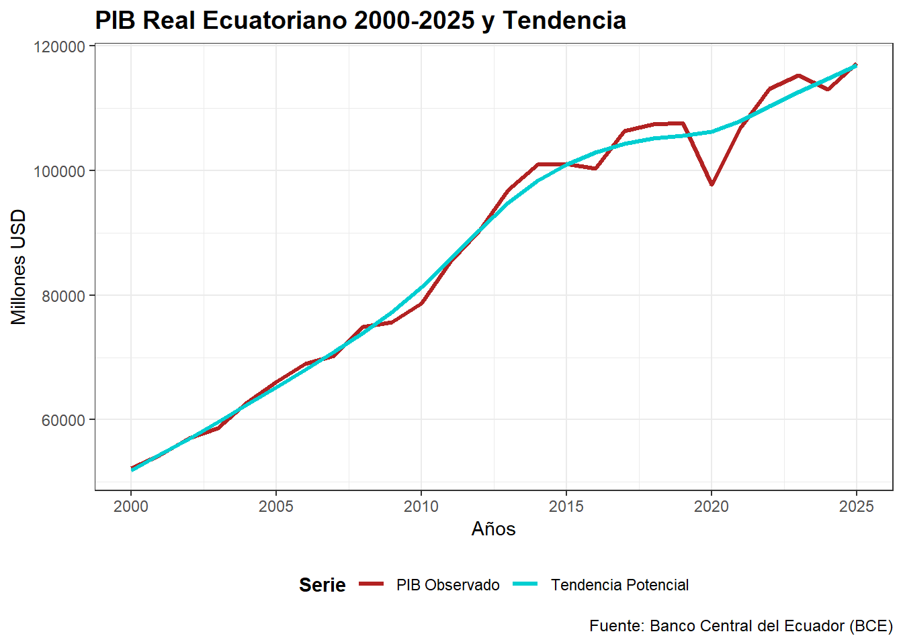
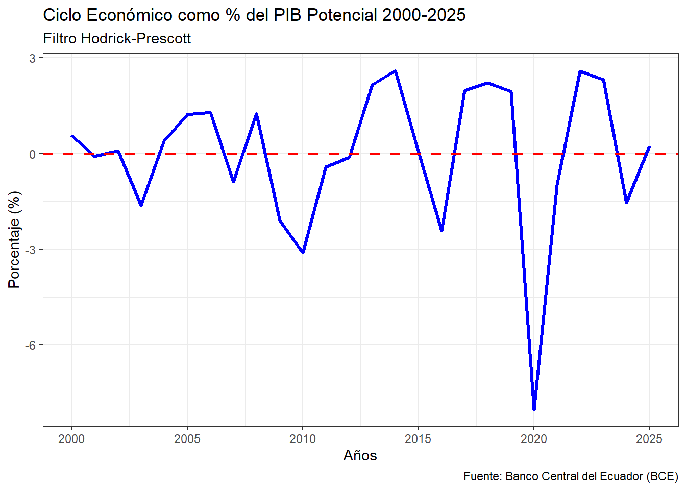
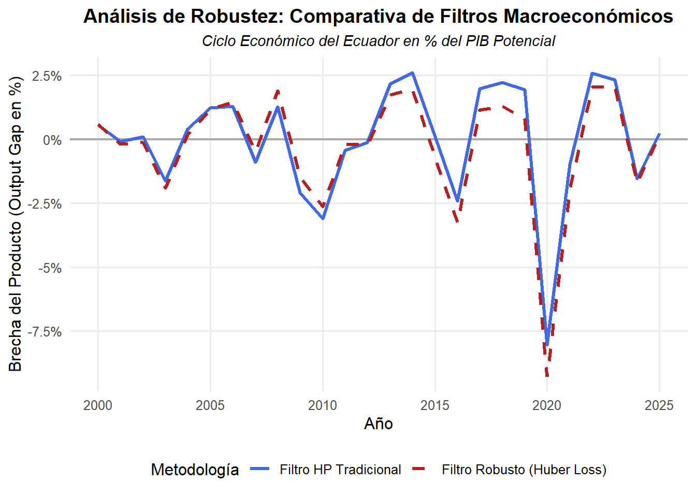
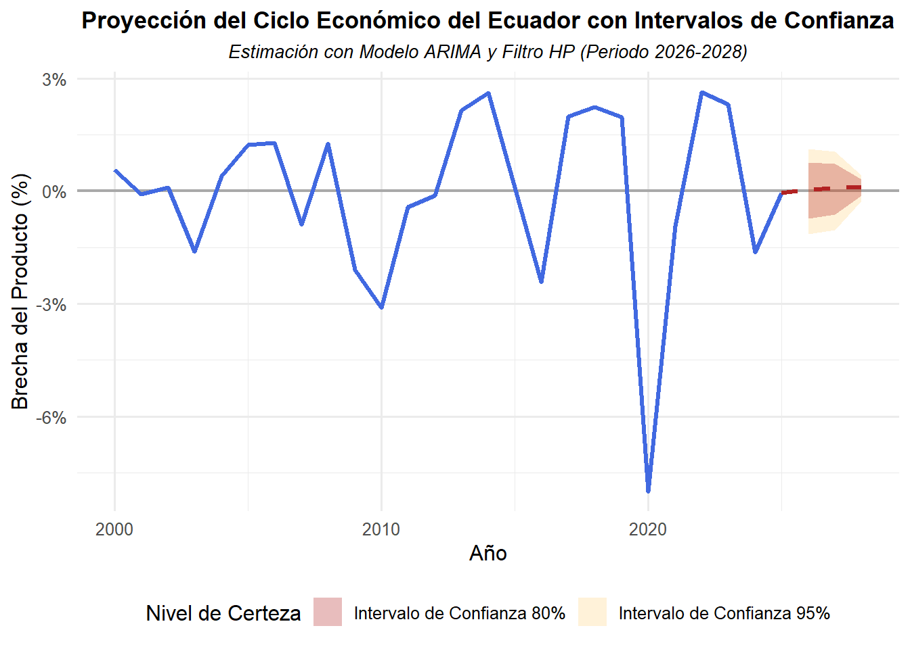

| año | pib_real |
|---|---|
| 2000 | 52158.04 |
| 2001 | 54351.95 |
| 2002 | 57030.47 |
| 2003 | 58675.51 |
| 2004 | 62684.45 |
| 2005 | 66068.55 |
| 2006 | 68936.67 |
| 2007 | 70248.15 |
| 2008 | 74859.88 |
| 2009 | 75676.61 |
| 2010 | 78725.73 |
| 2011 | 85402.83 |
| 2012 | 90341.86 |
| 2013 | 96856.62 |
| 2014 | 100949.85 |
| 2015 | 101070.67 |
| 2016 | 100375.35 |
| 2017 | 106368.16 |
| 2018 | 107478.96 |
| 2019 | 107656.74 |
| 2020 | 97703.77 |
| 2021 | 106909.31 |
| 2022 | 113183.20 |
| 2023 | 115257.67 |
| 2024 | 113016.96 |
| 2025 | 117227.91 |
Ciclo Económico
Análisis del Ciclo Económico y de la Brecha del Producto en el Ecuador: Un Diagnóstico Macroeconómico mediante Filtros Estructurales (2000–2028)
Introducción
El Producto Interno Bruto (PIB) se erige como el indicador macroeconómico fundamental para medir el tamaño, la evolución y la salud financiera de una economía. Definido de manera cuantitativa, el PIB representa el valor monetario total de todos los bienes y servicios finales producidos dentro de las fronteras de un país durante un periodo determinado, usualmente un año o un trimestre. No obstante, al evaluar el desempeño histórico de una nación, el PIB calculado a precios corrientes —conocido como PIB Nominal— presenta distorsiones analíticas severas, puesto que sus variaciones pueden presentar sesgos por los cambios generalizados en el nivel de precios de la economía (inflación).
Con el propósito de corregir este sesgo y aislar el crecimiento cuantitativo real del aparato productivo, se recurre al concepto del PIB Real o deflactado. El PIB Real mide la producción agregada evaluando los bienes y servicios de cada año utilizando los precios fijos de un año específico, denominado año base. Este proceso matemático, conocido como deflactación, elimina el efecto de la inflación y permite realizar comparaciones intertemporales metodológicamente válidas respecto a la verdadera capacidad de producción de una sociedad.
El presente artículo se fundamenta en las series históricas oficiales publicadas por el Banco Central del Ecuador (BCE) dentro de sus estadísticas del Sector Real y Cuentas Nacionales. Los datos monetarios empleados corresponden a niveles encadenados de volumen utilizando el año base 2018 (2018 = 100). (https://contenido.bce.fin.ec/documentos/PublicacionesNotas/Catalogo/IEMensual/m2090/IEM-431-e.xlsx)
Desde el punto de vista analítico, el PIB Real observado de un país se compone de la superposición de dos fuerzas económicas de distinta naturaleza temporal: una tendencia de largo plazo y un ciclo de corto o mediano plazo. Para descomponer formalmente esta variable, este estudio implementa el Filtro de Hodrick-Prescott (HP) (Hodrick & Prescott, 1997), un algoritmo matemático y estadístico de suavizamiento ampliamente validado por la literatura econométrica global y los bancos centrales.
La aplicación del Filtro HP tiene como objetivo dual extraer, por un lado, la tendencia estructural, que equivale al PIB Potencial o de pleno empleo de la economía (la capacidad productiva de largo plazo determinada por factores tecnológicos, de capital y de fuerza laboral); y, por otro lado, el componente cíclico. Este último aísla las desviaciones transitorias del PIB Real respecto a su tendencia, permitiendo cuantificar la “Brecha del Producto” o Output Gap. El diagnóstico de esta brecha resulta indispensable para la política económica: una brecha positiva alerta sobre escenarios de sobrecalentamiento económico, mientras que una brecha negativa delinea periodos de recesión, desempleo y capacidad ociosa. A través de este instrumental metodológico, complementado con proyecciones estadísticas robustecidas, este trabajo se propone diagnosticar la cronología de las crisis contemporáneas del Ecuador y aportar perspectivas técnicas sobre su senda de estabilización económica en el mediano plazo.
1. PIB real y su tendencia
A continuación se presenta la serie Historica del PIB real obtenida del Banco Central , a partir de esta serie usaremos el filtro HP para obtener la tendencia.

En este gráfico podemos ver la evolución del PIB real y su componente de tendencia.
La Tendencia Potencial (Largo Plazo): Mide la capacidad potencial instalada. Crece de forma continua debido a factores acumulativos que no se detienen por una crisis coyuntural: el aumento de la población (más mano de obra disponible), la acumulación histórica de infraestructura física (carreteras, hidroeléctricas, telecomunicaciones construidas en los años de bonanza) y la adopción tecnológica básica. Por eso la línea azul siempre tira hacia arriba.
El PIB Observado (Corto Plazo): Mide la producción real y efectiva del día a día, es decir, refleja la evolución anual en millones de USD. Se aprecia un crecimiento sostenido desde 2000 hasta 2019, con una caída abrupta en 2020 (efecto de la pandemia y la crisis global).
Brechas cíclicas: cuando el PIB observado está por encima de la tendencia, la economía opera en expansión; cuando está por debajo, en recesión o desaceleración.
Entre 2000 y 2008: la tendencia acompaña el crecimiento fuerte impulsado por altos precios del petróleo.
2009: se observa una leve desaceleración por la crisis financiera internacional.
2010–2014: recuperación y expansión, aunque con cierta moderación.
2015–2019: la tendencia muestra un crecimiento más plano, reflejando menor dinamismo estructural.
2020: el PIB observado cae muy por debajo de la tendencia, evidenciando el shock externo.
2021–2025: el PIB observado se recupera y converge nuevamente hacia la tendencia, aunque sin superar el nivel potencial.
Tendencia estructural: el filtro HP sugiere que el crecimiento potencial de Ecuador se ha moderado en la última década, pasando de tasas altas (2000–2008) a un ritmo más bajo (2015 en adelante).
Implicación de política: la brecha negativa de 2020 muestra capacidad ociosa; la recuperación posterior indica que la economía vuelve a alinearse con su potencial, pero sin un cambio estructural fuerte en la tendencia.
2. Ciclo económico del PIB real
El ciclo del PIB es la fluctuación de la actividad económica real a corto y mediano plazo alrededor de su tendencia de crecimiento de largo plazo. El PIB observado de un país se compone de dos elementos principales: una tendencia (el PIB potencial o estructural) y un ciclo (las desviaciones de la economía real frente a ese potencial)
Cómo se obtiene: Se calcula mediante algoritmos matemáticos llamados filtros estadísticos (el más común es el Filtro de Hodrick-Prescott o Filtro HP). Estos filtros toman la serie temporal del PIB Real y remueven la tendencia de crecimiento a largo plazo, aislando matemáticamente las oscilaciones transitorias.
Qué mide: Mide la Brecha del Producto (o Output Gap). Nos indica si la economía está produciendo por encima o por debajo de su capacidad instalada ideal (su nivel de pleno empleo sin generar presiones inflacionarias).
Fases del ciclo: El ciclo transita periódicamente por cuatro fases: recuperación (el ciclo empieza a subir), expansión o auge (alcanza un pico por encima de la tendencia), desaceleración (empieza a bajar) y contracción o recesión (cae en un valle por debajo de la tendencia).
Como se interpreta el ciclo:
Brecha Positiva (PIB Real > PIB Potencial): Si el ciclo está muy por encima de cero, la economía está sobrecalentada. Sirve como diagnóstico para alertar al Banco Central sobre riesgos de inflación, permitiéndole decidir si sube las tasas de interés para enfriar el mercado.
Becha Negativa (PIB Real < PIB Potencial): Si el ciclo está por debajo de cero, hay capacidad productiva ociosa y desempleo elevado. Diagnostica una fase recesiva, indicando que el gobierno debe aplicar políticas de estímulo (como bajar tasas de interés o aumentar el gasto público).
Planificación de Ingresos Públicos: Las empresas y el Estado lo usan para proyectar ventas y recaudación de impuestos. En la parte alta del ciclo los ingresos suben artificialmente; conocer el ciclo evita que el Estado gaste dinero creyendo que esa bonanza será permanente.
Para extraer el ciclo económico se utiliza la librería mFilter. El parámetro clave es lambda, que determina la suavidad de la tendencia. Los valores estándar en macroeconomía son 6.25 para datos anuales y 1600 para datos trimestrales.
3. Metodología: Extracción del Ciclo Económico y Descomposición del PIB
Para la identificación y análisis de las fluctuaciones de la actividad económica ecuatoriana durante el periodo 2000-2025, se procedió a descomponer la serie histórica del Producto Interno Bruto (PIB) Real en sus dos componentes fundamentales: la tendencia de largo plazo (PIB potencial o estructural) y el ciclo económico de corto y mediano plazo (brecha del producto u output gap).
La extracción del ciclo se realizó mediante la aplicación del Filtro de Hodrick-Prescott (HP) (Hodrick & Prescott, 1997). Este filtro es un estimador estadístico de suavizamiento que resuelve un problema de optimización, minimizando la varianza del componente cíclico sujeto a una penalización sobre las variaciones de la tasa de crecimiento de la tendencia, expresado matemáticamente de la siguiente manera:

Donde yt representa el PIB Real observado en el periodo t, Tt es el componente de tendencia (PIB potencial) y lambda es el parámetro de penalización que determina la suavidad de dicha tendencia. Dado que los datos analizados corresponden a una periodicidad anual, se estableció contractualmente el parámetro lambda (λ) = 6.25, conforme al consenso econométrico internacional para el análisis de series anuales, según el paper: “On adjusting the Hodrick-Prescott filter for the frequency of observations” (Ravn & Uhlig, 2002).
Una vez extraídos ambos componentes a través del software estadístico R, el ciclo económico se transformó a términos relativos para facilitar su interpretación y comparación intertemporal. De este modo, la variable final de diagnóstico se calculó como el desvío porcentual del PIB observado respecto a su nivel potencial:

De esta manera obtenemos el ciclo de la economía ecuatoriana para el período 2000 al 2025 representado en el siguiente gráfico:

Línea roja (0%): representa el equilibrio, es decir, cuando el PIB observado coincide con el PIB potencial.
Por encima de 0 (PIB > PIB potencial): la economía está en expansión (las industrias operaron a máxima capacidad, el desempleo bajó y el consumo de los hogares fue alto). Se produce una brecha positiva: mayor producción que la capacidad de largo plazo, lo que puede implicar sobrecalentamiento, inflación o presión sobre recursos.
Por debajo de 0 (PIB < PIB potencial): la economía está en recesión o desaceleración (cerraron empresas, se disparó el desempleo y quedó una enorme cantidad de maquinaria e infraestructura subutilizada). Se presenta una brecha negativa: la producción efectiva es menor que la capacidad potencial, lo que refleja capacidad ociosa, desempleo y menor dinamismo.
Los picos representan fases de bonanza, donde la economía produce por encima de su capacidad estructural.
Los valles reflejan crisis o desaceleraciones, con capacidad ociosa y caída del empleo.
El ciclo muestra que Ecuador ha tenido expansiones ligadas a precios internacionales del petróleo y recesiones vinculadas a shocks externos (2009, 2020).
La tendencia general sugiere que las expansiones son cada vez menos intensas y las recesiones más marcadas, lo que evidencia vulnerabilidad estructural.
Picos positivos (expansión):
2007–2008: auge por altos precios del petróleo y fuerte gasto público.
El Pico de 2013-2014 (Cercano al +3%):
Muestra la cúspide del “Boom Petrolero”. Durante este período, la brecha del producto fue altamente positiva, impulsada por los altos precios del crudo y una fuerte inyección de gasto público en infraestructura que recalentó positivamente la actividad económica.El Rebote Post-Pandemia (2021-2022):
Muestra una recuperación en V muy agresiva que vuelve a superar el +2.5%. Esto no se debió a un crecimiento estructural genuino, sino al “efecto rebote” estadístico tras la reapertura total de los mercados, la vacunación masiva y el incremento temporal de los precios internacionales de las materias primas.Recuperación posterior (2025): la línea azul vuelve a acercarse a cero, mostrando que la economía converge hacia su potencial, aunque sin alcanzar expansiones fuertes como en la década de 2000.
Valles negativos (recesión):
La Crisis Financiera Global (2008-2010):
Se observa una caída pronunciada que toca fondo en 2010 (casi un -3%). Esto refleja el impacto de la Gran Recesión mundial de 2008, que desplomó el precio del petróleo a finales de ese año y redujo drásticamente las remesas enviadas por los migrantes ecuatorianos desde España y Estados Unidos.El Fin del Boom y el Terremoto (2015-2016):
El gráfico muestra un desplome rápido que cruza la línea de cero y cae hasta casi -2.5% en 2016. Esto diagnostica perfectamente dos eventos: la caída de los precios petroleros que inició a finales de 2014 (shocks de términos de intercambio) y el devastador terremoto de Manabí en abril de 2016.El Abismo de 2020 (Aproximadamente -8%):
En contraste radical con la bonanza de la década previa, el año 2020 registra la contracción más severa en la historia económica reciente del país, con una brecha de producto marcadamente negativa que profundizó el ciclo hasta un abismo del -8% respecto a su nivel potencial, la caída gráfica es dramática. Este valle histórico diagnostica el shock simultáneo de oferta y demanda por el confinamiento de la pandemia, sumado al colapso de los precios del petróleo.
La Desaceleración Reciente (2024):
Hacia el final de la serie, el ciclo vuelve a terreno negativo en 2024 antes de intentar estabilizarse hacia el 2025. Esto captura el enfriamiento económico reciente del país debido a problemas de liquidez fiscal, crisis energética (cortes de luz) y problemas de seguridad.
Como se puede apreciar la economía del Ecuador es altamente volátil y dependiente de shocks externos. Pasó de un extremo positivo de +3% (abundancia petrolera) a un abismo de -8% (pandemia y caída de ingresos) en menos de una década, el ciclo económico de Ecuador rara vez se mantiene estable sobre la línea del cero (PIB Potencial). El país experimenta ciclos económicos muy cortos y de altísima amplitud (oscila frecuentemente entre +3% y -3%, con el extremo de -8%). Al ser una economía dolarizada y dependiente de materias primas, carece de política monetaria propia para amortiguar estos shocks, haciendo que los ciclos dependan enteramente de factores externos (precio del petróleo) y fiscales.
Analizando el último periodo, la economía se diagnostica en una situación desfavorable o de estancamiento (Brecha del Producto Negativa) debido a:
Pérdida de Impulso: La economía sufrió una fuerte desaceleración en 2024, rompiendo la recuperación del rebote post-pandemia.
Capacidad Ociosa: Al estar el ciclo por debajo de la línea roja de cero en el último tramo, el diagnóstico es que el país tiene fábricas subutilizadas, baja inversión privada y altas tasas de subempleo. La economía tiene el “potencial” de producir más (tendencia creciente), pero shocks actuales como la crisis energética (cortes de luz), los choques asociados a la seguridad interna y problemas de liquidez fiscal le impiden alcanzar ese potencial.
4. Duración Promedio del Ciclo en Ecuador (2000-2025)
| Pico_Inicio | Valle_Fondo | Duracion_Anos |
|---|---|---|
| 2001 | 2003 | 2 |
| 2006 | 2010 | 4 |
| 2014 | 2016 | 2 |
| 2018 | 2020 | 2 |
| 2022 | 2024 | 2 |
Duración promedio de las fases de contracción: 2.4 años. La volatilidad promedio del ciclo económico es de: 2.31 %El tiempo de recuperación del aparato productivo ecuatoriano toma, en promedio, 2.4 años antes de alcanzar un punto de inflexión.
En la teoría macroeconómica, ciclos que cambian de dirección cada 2 o 3 años se clasifican como ciclos de corto plazo (Ciclos de Kitchin). Esto demuestra que la estabilidad en Ecuador es sumamente frágil y efímera; la economía no logra sostener una fase de auge por más de 3 o 4 años seguidos antes de sufrir un nuevo revés, ademas la volatidad es del 2.3% lo que significa que Ecuador es una economía de shocks severos. Las economías estables y diversificadas suelen tener desviaciones estándar bajas.
5. Algunas consideraciones sobre el ciclo
a) Variables Pro-cíclicas (Se mueven en la misma dirección que el ciclo)
El Empleo Formal
La Recaudación de Impuestos (IVA e Impuesto a la Renta)
b) Variables Contra-cíclicas (Se mueven en dirección opuesta al ciclo)
- La Pobreza y la Desigualdad: Aumentan agresivamente cuando el ciclo cae a terreno negativo.
c) Crecimiento Estructural vs. Coyuntura Real
En macroeconomía, que la tendencia sea creciente significa que la capacidad potencial de producción a largo plazo del país ha aumentado de tamaño (gracias a factores acumulados en el tiempo como el crecimiento de la población, mayor infraestructura o adopción tecnológica).
Sin embargo, el ciclo económico mide el presente inmediato. Estar por debajo de cero en la parte final del gráfico significa que, aunque el país hoy tiene una infraestructura y un tamaño potencial más grande que en el año 2000, está operando muy por debajo de esa capacidad instalada.
6. Contraste del filtro Holdrick-Prescott con el filtro robusto Huber Loss
Con el propósito de garantizar la fiabilidad del diagnóstico y verificar que shocks macroeconómicos extremos de carácter transitorio, tales como la crisis sanitaria y el colapso de los términos de intercambio del año 2020, no distorsionaran el cálculo de la tendencia de largo plazo mediante el clásico problema de los extremos (end-point problem) inherente al filtro HP, se ejecutó un análisis de robustez. Para ello, se contrastaron los resultados con algoritmos de estimación robusta basados en funciones de pérdida de Huber mediante la librería especializada MacroFilters, ratificando la consistencia temporal, la duración promedio y la cronología de las fases recesivas y expansivas identificadas en la economía ecuatoriana.

Métricas adicionales para la afirmación de robustez:
Correlación entre los dos filtros es: 0.9742538Error medio absoluto entre los dos filtros es: 0.480328Diferencia máxima entre los dos filtros es: 1.235369Como se puede apreciar ambas metodologías muestran una trayectoria y cronología de ciclos económicos casi idénticas. Esta alta coincidencia confirma la robustez de la estimación y demuestra que los shocks extremos de la economía ecuatoriana, particularmente la contracción del año 2020, no generaron distorsiones matemáticas en la tendencia estructural de largo plazo.
7. Proyección del ciclo económico
Con el propósito de evaluar la trayectoria de mediano plazo de la actividad económica, se extendió la serie del PIB Real hasta el año 2028 mediante un modelo de vectores autorregresivos integrados de media móvil (ARIMA), con el propósito de estimar el periodo en que el aparato productivo nacional retornará a su senda potencial de pleno empleo.

La inclusión de los intervalos de confianza al 80% y 95% en el anterior gráfico permite cuantificar estadísticamente el grado de incertidumbre macroeconómica del mediano plazo. Las bandas de confianza tienden a ensancharse a medida que el horizonte de proyección se aleja (2026 a 2028). Esto diagnostica que, si bien la proyección central estima una trayectoria estable de crecimiento por encima del 0% (PIB observado = PIB potencial) , existe una probabilidad estadística de que choques imprevistos de oferta o demanda (como nuevos cambios en el precio del crudo o crisis climáticas) desplacen el ciclo real hacia los límites superiores o inferiores sombreados.
8. Métricas de precisión para la proyección
Para validar la capacidad predictiva del modelo ARIMA ajustado a la serie histórica del PIB Real del Ecuador, se realizó un análisis de errores mediante las siguientes métricas.
MAE (Error Absoluto Medio): Mide el error promedio en las mismas unidades (Millones de USD).
RMSE (Raíz del Error Cuadrático Medio): Penaliza con mayor fuerza los errores grandes.
MAPE (Error Porcentual Absoluto Medio): Mide el error en porcentaje (%), lo que permite decir con qué nivel de exactitud general predice el modelo.
--- INDICADORES DE ERROR DEL MODELO (PIB REAL) ---/nMAE (Error Absoluto Medio): 2468.73 Millones de USD/nRMSE (Raíz del Error Cuadrático Medio): 3563.21 Millones de USD/nMAPE (Error Porcentual Absoluto Medio): 2.6 %/n/nLos resultados arrojan un Error Absoluto Medio (MAE) de 2468.73Millones de USD y un Error Porcentual Absoluto Medio (MAPE) de 2.6%. por lo que el modelo tiene muy buena capacidad de predicción.
A continuación, la siguiente tabla expone las proyecciones detalladas para el periodo de mediano plazo, incorporando sus respectivos intervalos de confianza al 80% y 95% tanto para el agregado macroeconómico del PIB como para la brecha porcentual del ciclo económico:
| Año | PIB_Central | PIB_Inf_80 | PIB_Sup_80 | PIB_Inf_95 | PIB_Sup_95 | Ciclo_Central_Pct | Ciclo_Inf_95_Pct | Ciclo_Sup_95_Pct |
|---|---|---|---|---|---|---|---|---|
| 2026 | 119830.7 | 115077.8 | 124583.6 | 112561.8 | 127099.6 | 0.04% | -1.15% | 1.12% |
| 2027 | 122433.5 | 115711.9 | 129155.1 | 112153.7 | 132713.3 | 0.08% | -1.04% | 1.05% |
| 2028 | 125036.3 | 116804.0 | 133268.6 | 112446.1 | 137626.5 | 0.11% | -0.27% | 0.41% |
9. Conclusiones y Recomendaciones de Política Económica
Conclusiones
Elevada volatilidad y dependencia externa: La descomposición del PIB mediante el Filtro de Hodrick-Prescott demuestra que la economía ecuatoriana experimenta ciclos de corta duración (promedio de 2.4 años de contracción) y amplitudes profundas. Al carecer de un tipo de cambio propio debido a la dolarización, el país absorbe los shocks externos (como las fluctuaciones del petróleo) de manera directa en su producción y empleo, pasando de expansiones del +3% (2013) a crisis del -8% (2020) en menos de una década.
Persistencia de brechas recesivas en la actualidad: A pesar de que la tendencia a largo plazo del PIB potencial muestra una trayectoria creciente —lo que confirma un incremento en el tamaño estructural y la capacidad instalada del país—, el ciclo económico actual permanece en terreno negativo. Esto concluye técnicamente que la economía nacional padece un problema de subutilización de sus factores productivos (capacidad ociosa y subempleo), donde el PIB real observado es incapaz de alcanzar su nivel potencial debido a cuellos de botella coyunturales (crisis energética, problemas de liquidez y seguridad).
Recomendaciones de Política Económica
Dado que Ecuador no dispone de política monetaria tradicional para contrarrestar las fases negativas del ciclo, las estrategias estatales deben enfocarse en la política fiscal, la diversificación y la competitividad estructural:
Creación de fondos de estabilización fiscal contra-cíclicos: El Estado ecuatoriano debe diseñar e institucionalizar fondos de ahorro obligatorios durante las fases de auge del ciclo (cuando el ciclo esté por encima de cero o el petróleo esté alto). Estos recursos no deben gastarse en la bonanza, sino reservarse exclusivamente para ser inyectados en la economía en forma de inversión pública o subsidios focalizados durante los valles recesivos (cuando el ciclo caiga por debajo de cero), suavizando así las crisis.
Mitigación de riesgos estructurales y crisis energética: Para corregir la brecha negativa actual y permitir que el PIB observado alcance la tendencia creciente del PIB potencial, es imperativo priorizar la inversión en la infraestructura base del país. Esto implica asegurar la estabilidad del sistema eléctrico nacional mediante la diversificación de la matriz energética y abrir espacio a la inversión privada regulada en sectores estratégicos, reduciendo los paros productivos que frenan el crecimiento.
Fomento a la diversificación productiva y exportadora: Para reducir la vulnerabilidad frente a shocks externos que destruyen valor de forma cíclica (como ocurrió en 2015 y 2020), el diseño de políticas públicas debe incentivar sectores no tradicionales con alto valor agregado y potencial exportador (agroindustria, servicios tecnológicos, turismo sostenible). Disminuir la dependencia histórica del petróleo estabilizará de forma natural la trayectoria de los ingresos de la economía.
Flexibilización de costos transaccionales en periodos de crisis: Ante la imposibilidad de devaluar la moneda para ganar competitividad externa durante un valle del ciclo, el gobierno debe implementar reformas microeconómicas que reduzcan los costos de hacer negocios en el país. Esto incluye incentivos tributarios temporales para la contratación en épocas de contracción y la simplificación de trámites burocráticos para atraer Inversión Extranjera Directa (IED) que reactive el consumo interno.
10. Bibliografía:
Banco Central del Ecuador. (abril 2026). Cuentas Nacionales Anuales y Boletín mensual: Producto Interno Bruto (PIB) Enfoque del Gasto. Quito: BCE.
Hodrick, R. J., & Prescott, E. C. (1997). Postwar US business cycles: an empirical investigation. Journal of Money, Credit, and Banking, 1-16.
Ravn, M. O., & Uhlig, H. (2002). Notes On adjusting the Hodrick-Prescott filter for the frequency of observations. The Review of Economics and Statistics, 1-12
Mankiw, N. G. (2014). Macroeconomía (8.ª ed.). Antoni Bosch editor, 397-402